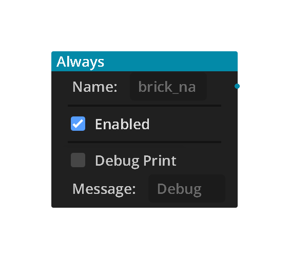
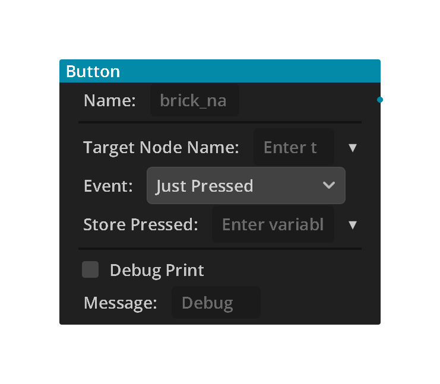
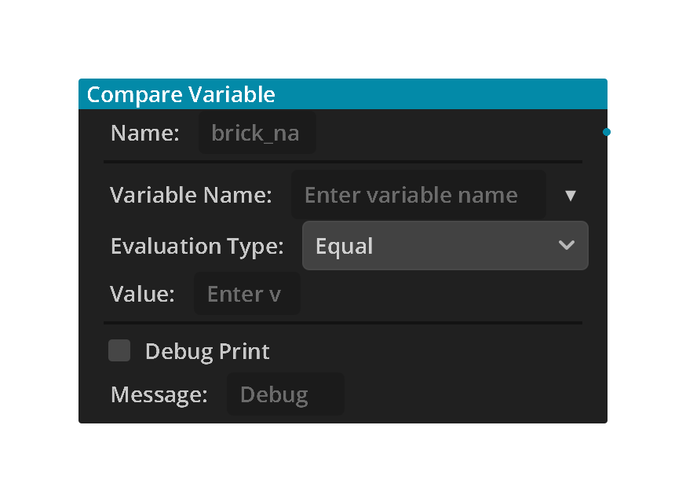
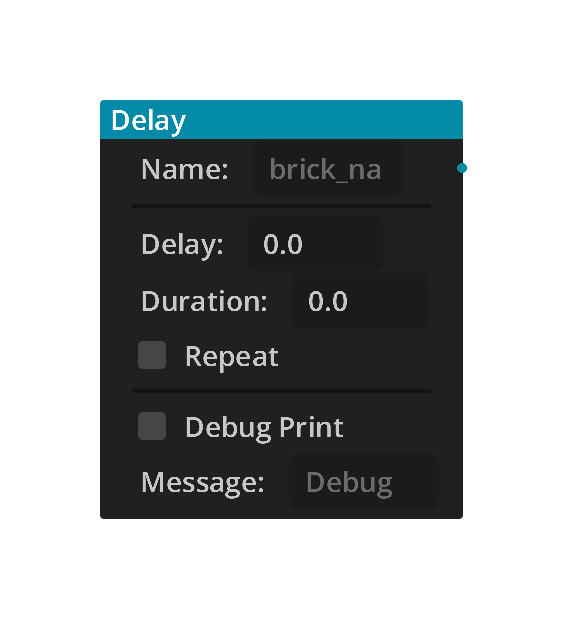
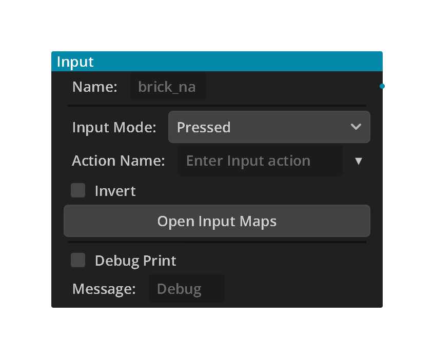
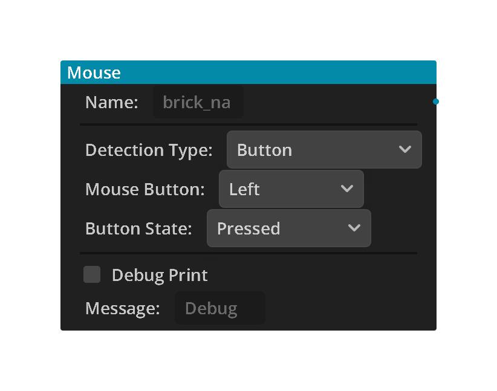
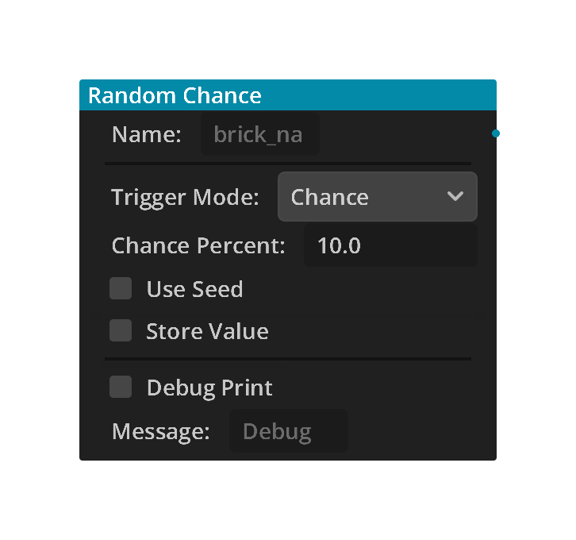
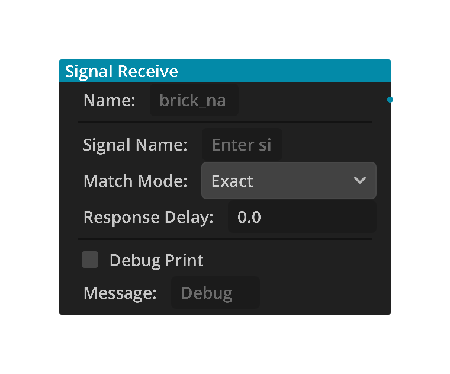

UI Triggers
9 triggers available for UI workflows.
How triggers fit into a chain
Triggers detect input, state , collisions, timing, and other conditions. They begin a chain but do not perform gameplay actions by themselves.
- Choose the event or condition to detect.
- Configure filters, thresholds, or stored values.
- Connect the trigger to a Gate , then to one or more Actions.
Always
Runs continuously while this logic chain is active. Useful for UI updates that need to happen every frame.
Options
| Property | Details |
|---|---|
enabled
|
Enabled
Default:
true
|
Using this brick
Typical uses
- Run bricks that must work every frame, such as Character Physics, cameras, steering and UI updates.
- Combine with another trigger through an AND gate so an action runs every frame only while that condition holds.
Example chain

Button
Detects UI button state from a Button node. Leave Target Node Name blank to use self only when this Logic Bricks graph is on the Button itself.
Options
| Property | Details |
|---|---|
target_node_name
|
Target Node Name
Button node name to check. Leave blank to check the selected node itself. |
event
|
Event
Choices: Just Pressed, Pressed, Just Released, Hovering, Focused, Toggled On, Toggled Off Default:
Just Pressed
Just Pressed/Released are one-frame events. Pressed checks current button state. Hovering and Focused check UI state. Toggled modes require a toggle button. |
store_pressed
|
Store Pressed
Optional variable name to store the button's current pressed/toggle state. |
Using this brick
Typical uses
- Run menu actions when a Button is pressed: start game, open settings, quit.
- Show a tooltip or sound while a button is hovered or focused.
Example chain

Compare Variable
Compares a variable's value. Works with local, exported, and global variables. Automatically checks GlobalVars if not found locally.
variable_name matches an Array variable, the Evaluation Type menu changes automatically. Use Contains or Does Not Contain to test for an item, the empty checks to test whether the Array has any items, or the size checks to compare the number of items. The selected Array Item Type determines how the entered value is interpreted.
Options
| Property | Details |
|---|---|
variable_name
|
Variable Name
Name of the variable to check. Type a name or choose an existing local/global variable from the dropdown. |
evaluation_type
|
Evaluation Type
Choices: Equal, Not Equal, Interval, Changed, Greater Than, Less Than, Greater or Equal, Less or Equal Default:
Equal
How to compare the variable. |
value
|
Value
Value to compare against. Accepts numbers, booleans, strings, or variable names. |
min_value
|
Min Value
Minimum value (for Interval mode). |
max_value
|
Max Value
Maximum value (for Interval mode). |
item_type
|
Item Type
Choices: bool, int, float, String, Vector2, Vector3 Default:
String
|
Using this brick
Typical uses
- Win, lose or game-over checks, such as health ≤ 0 or score ≥ 100.
- Inventory checks with Contains or Does Not Contain on an Array variable.
- React only when a value changes, with the Changed evaluation.
Example chain

Delay
Waits for Delay seconds, then stays active for Duration seconds. Repeat cycles the whole sequence.
Options
| Property | Details |
|---|---|
delay
|
Delay
Default:
0.0
Seconds to wait before becoming active. Accepts a number (1.5) or a variable name (my_delay). |
duration
|
Duration
Default:
0.0
Seconds to stay active once triggered. 0 = active for one frame only. Accepts a number (1.5) or a variable name (my_duration). |
repeat
|
Repeat
Default:
false
When enabled, restarts the delay after the duration ends. |
Using this brick
Typical uses
- Wait a few seconds before an action, such as a timed door or a bomb fuse.
- Repeat an action on an interval with Repeat on, such as spawning an enemy every 5 seconds.
Example chain

Input
Detects input actions from Project > Input Map. Supports button presses, any-action checks, and analog joystick axis input.
Options
| Property | Details |
|---|---|
input_mode
|
Input Mode
Choices: Pressed, Just Pressed, Just Released, Any Pressed, Any Just Pressed, Any Just Released, Axis Default:
Pressed
Pressed: active while held Just Pressed: one frame on press Just Released: one frame on release Any Pressed: active when any action in the Input Map is held Any Just Pressed: one frame when any Input Map action is pressed Any Just Released: one frame when any Input Map action is released Axis: joystick/WASD axis value (-1 to 1) |
action_name
|
Action Name
Type an Input Map action name or choose one from the dropdown. Project-created actions are listed first, followed by Godot's built-in actions. Ignored by Any modes. |
negative_action
|
Negative Action
Input Map action for the -1 direction. Example: 'move_left', 'move_forward', 'look_down' Must match an action in Project > Input Map. |
positive_action
|
Positive Action
Input Map action for the +1 direction. Example: 'move_right', 'move_back', 'look_up' Must match an action in Project > Input Map. |
invert
|
Invert
Default:
false
Invert the trigger result. Button modes: active when action is NOT pressed. Any modes: active when no Input Map action matches. Axis mode: active when the axis is NOT moved past the deadzone. |
store_in
|
Store In
Variable name to store the axis value (-1.0 to 1.0). Create this variable in the Variables tab. Then use it in a Motion action field (e.g. 'up * speed'). |
deadzone
|
Deadzone
Default:
0.1
Ignore stick values smaller than this. Prevents drift from loose joysticks. 0.1 is a good default. |
Using this brick
Typical uses
- Movement and actions from Project → Input Map, such as move_left, jump or interact.
- Read an analog stick with Axis mode and store the value for movement.
- Pause menus and confirm buttons with Just Pressed.
Example chain

Mouse
Detects mouse buttons, wheel movement, mouse motion, and mouse hover ray hits.
Options
| Property | Details |
|---|---|
detection_type
|
Detection Type
Choices: Button, Wheel, Movement, Hover Object, Hover Any Default:
Button
What mouse event to detect: Button, Wheel, Movement, Hover Object, or Hover Any. |
mouse_button
|
Mouse Button
Choices: Left, Right, Middle Default:
Left
Which mouse button to detect: Left, Right, or Middle. |
button_state
|
Button State
Choices: Pressed, Released, Held Default:
Pressed
When to activate: Pressed, Released, or Held. |
wheel_direction
|
Wheel Direction
Choices: Up, Down Default:
Up
Which wheel direction to detect. |
movement_threshold
|
Movement Threshold
Default:
0.1
Minimum mouse movement before the trigger activates. |
target_node_name
|
Target Node Name
Default:
self
For Hover Object: self, or the name/path of a child node to detect under the mouse. The target or one of its child collision objects must be hit by the ray. |
check_interval
|
Check Interval
Range: 0.0 to 5.0 Default:
0.0
Hover modes: seconds between checks. 0 = check every frame. Each hover check casts a ray, so checking less often saves work when many objects use hover; between checks the trigger keeps its last result. 0.05 to 0.1 still feels instant. |
Using this brick
Typical uses
- Shoot or interact when a mouse button is pressed.
- Zoom with the mouse wheel, or react when the cursor hovers over an object.
Example chain

Random Chance
Activates randomly each time it is evaluated. Pair with a Delay Trigger to control how often it rolls. Useful for random behaviors, AI variation, and loot rolls.
Options
| Property | Details |
|---|---|
trigger_mode
|
Trigger Mode
Choices: Chance, Value, Range Default:
Chance
Chance: rolls TRUE with a given probability each evaluation. Value: rolls an integer and fires TRUE when it matches the target. Range: rolls a whole number from Min to Max and fires every time. Turn on Store Value to use the number (for example, a dice roll or a loot table). |
chance_percent
|
Chance Percent
Range: 0.0 to 100.0 Default:
10.0
Probability of firing TRUE (0–100%). 10 = 10% chance per evaluation. 100 = always fires. |
target_value
|
Target Value
Default:
0
The integer the roll must equal to fire TRUE (Value mode). The roll range is [0, target_value * 2] so the target sits in the middle. |
target_min
|
Target Min
Default:
0
Smallest number the roll can be (Range mode). Included. |
target_max
|
Target Max
Default:
100
Largest number the roll can be (Range mode). Included. |
use_seed
|
Use Seed
Default:
false
Use a fixed seed for reproducible random sequences. Same seed always produces the same sequence of results. |
seed_value
|
Seed Value
Default:
0
The seed value to use when Use Seed is enabled. |
store_value
|
Store Value
Default:
false
Store the generated random number in a variable each evaluation. Chance mode stores 1.0 when fired, 0.0 otherwise. |
value_variable
|
Value Variable
Variable name to store the generated value in. Create it in the Variables tab first. |
Using this brick
Typical uses
- Add variation, such as an idle animation that sometimes plays or an occasional critical hit.
- Dice rolls: Range mode with Min 1, Max 6 and Store Value gives a number from 1 to 6 each time it fires.
- Loot tables: roll once with Range 1 to 100 and Store Value into a variable such as roll, then use Compare Variable triggers on roll (1 to 60 common, 61 to 90 rare, 91 to 100 epic). Separate Random bricks each roll on their own, so one shared roll is what keeps the drops from overlapping.
Example chain

Signal Receive
Detects signals sent by a Signal Send Action. Listens for a specific Signal name.
Options
| Property | Details |
|---|---|
signal_name
|
Signal Name
Signal name to listen for. Must match what the Signal Send Action sends. |
match_mode
|
Match Mode
Choices: Exact, Contains, Starts With Default:
Exact
Exact: Signal name must match exactly Contains: Signal name contains the text Starts With: Signal name starts with the text |
response_delay
|
Response Delay
Default:
0.0
Seconds to wait after receiving the message before activating. 0 = activate immediately on the same frame the message arrives. |
Using this brick
Typical uses
- React to events sent from other objects, such as a switch opening a door elsewhere in the level.
- Update the UI when gameplay sends a signal such as player_hit.
Example chain

Variable
Compares a variable's value. Works with local, exported, and global variables. Automatically checks GlobalVars if not found locally.
Options
| Property | Details |
|---|---|
variable_name
|
Variable Name
Name of the variable to check. Type a name or choose an existing local/global variable from the dropdown. |
evaluation_type
|
Evaluation Type
Choices: Equal, Not Equal, Interval, Changed, Greater Than, Less Than, Greater or Equal, Less or Equal Default:
Equal
How to compare the variable. |
value
|
Value
Value to compare against. Accepts numbers, booleans, strings, or variable names. |
min_value
|
Min Value
Minimum value (for Interval mode). |
max_value
|
Max Value
Maximum value (for Interval mode). |
item_type
|
Item Type
Choices: bool, int, float, String, Vector2, Vector3 Default:
String
|
Using this brick
Typical uses
- Win, lose or game-over checks, such as health ≤ 0 or score ≥ 100.
- Inventory checks with Contains or Does Not Contain on an Array variable.
- React only when a value changes, with the Changed evaluation.